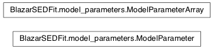

Module: model_parameters¶
This module contains the base classes necessary to handle models paramters/
Classes and Inheritance Structure¶
Classes relations¶

ModelParameter(**keywords) |
This class is the base class for models parameters. |
ModelParameterArray() |
This class provide and interface to handle an array of ModelParameter objects. |
Module API¶
-
class
BlazarSEDFit.model_parameters.ModelParameter(**keywords)[source]¶ Bases:
objectThis class is the base class for models parameters. The following keywords arguments can be passed to the constructor
name : (str) parameter name (default=’unk’) val : (float) parameter value par_type : (str) parameter type (default=’unk’) units : (str) units of the parameter, (default=’No’) val_min : (float) minimum physical value val_max : (float) maximum physical value val_start : (float) starting value val_last_call : (float) last call value fit_range_min : (float) minimum boundary value for the fit fit_range_max : (float) maximum boundary value for the fit frozen : (bool) boolean flag for frozen parameter (default=False) log : (bool) boolean flag for log-scale value (default=False)
name : (str) parameter name (default=’unk’) val : (float) parameter value par_type : (str) parameter type (default=’unk’) units : (str) units of the parameter, (default=’No’) val_min : (float) minimum physical value val_max : (float) maximum physical value val_start : (float) starting value val_last_call : (float) last call value fit_range_min : (float) minimum boundary value for the fit fit_range_max : (float) maximum boundary value for the fit frozen : (bool) boolean flag for frozen parameter (default=False) log : (bool) boolean flag for log-scale value (default=False)
-
get_bestfit_description(nofields=False)[source]¶ gives the value of each member of the
ModelParameterobjects, suited for the best-fit values- descr : (str)
- a string describing all the parameter values, suited for the best-fit values
-
get_description(nofields=False)[source]¶ gives the value of each member of the
ModelParameterobjects, except the best-fit values- descr : (str)
- a string describing all the parameter values, except the best-fit values
-
get_fit_initial_value()[source]¶ Gives the initial fit value of the parameter
- val_start : value
- the parameter initial value
-
-
class
BlazarSEDFit.model_parameters.ModelParameterArray[source]¶ Bases:
objectThis class provide and interface to handle an array of
ModelParameterobjects.- par_array : list
- list of
ModelParameterobjects
-
add_par(par)[source]¶ adds a new
ModelParameterobject to the par_array
-
get(par_name, arg)[source]¶ gets the argument of a given parameter
par_name : (str) name of the parameter arg : keyword
if parameters is a
ModelParameterArrayobject:
-
get_par_by_name(name, verbose=False)[source]¶ selects a parameter by name
name : (str) parameter name
item : the
ModelParameterelement of the par_array with the corresponding name
-
set(par_name, *args, **keywords)[source]¶ sets to a given value a given parameter
par_name : (str) name of the parameter keywords : keywords to set the value or the range of the parameter
if parameters is a
ModelParameterArrayobject: